Working manuscript · November 2026
The live paper
A public working manuscript for Mora-3: the design, the experiment plan, and the evidence collected so far.
Abstract
A model across biological scales.
Can one model use a proposed molecule and a biological baseline to predict a response, then reverse direction and use a desired response to propose an intervention?
Mora-3 represents connected biological observations as typed graphs. Each graph can carry sequence, chemistry, structure, assay conditions, cell state, images, and phenotype where their links are supported. Known inputs and requested outputs are assigned per task, so a response can be a prediction target in one task and a design condition in another.
Interactive figure / Directions through one shared representation
Predict the response in a stated biological context where matched measurements support that task.
Desired outcomes are design inputs. A candidate remains a hypothesis until independently assessed.
A geometry match and experimentally confirmed function are separate results.
Methods
From records to experiments.
Explore the interactive 3D architecture atlas
Architecture
How node and edge tokens, sequence vocabularies, attention, search, and modality heads fit together.
Explore / 02Corpus & provenance
What counts as a paired example, how sources keep their original evidence, and how leakage is checked.
Explore / 03Training protocol
The order of admission gates, proxy experiments, width transfer, and held-out evaluation.
Explore / 04Modalities
Switch conditions and targets across molecules, structures, expression, images, and cellular state.
Explore / 05Outputs & capabilities
The intended result types, their formats, and what would count as evidence they work.
Explore / 06Research applications
Bioelectric patterning, tissue repair, molecular binding, and enzyme design.
ExploreNew methods / November 11, 2026
Flow-generated complete reasoning forests.
Explore all branches of a latent reasoning forest, the reward distribution, whole-trajectory analogies, directed topology, typed token refinement and few-step flow maps.
Open the full interactive explorer Print the eight-figure companion · Complete manuscript source
Flow-solver time is distinct from reasoning depth. Forest topology and typed actions require their own normalized construction policy; a continuous field alone does not choose arbitrary graph structure. Retrieval is train-only and group-disjoint. Final token projection is many-to-one and does not automatically preserve latent reward proportionality.
One-to-four-step distillation is a proposed teacher-to-flow-map stage. Quality adaptation retains pass, fail and unknown evidence in matched biological contexts; it does not declare a learned concept direction globally harmful. Both stages require actual held-out evaluation and a revised run allocation before extra optimizer runs.
Eight matching vector figures and scientific limitations
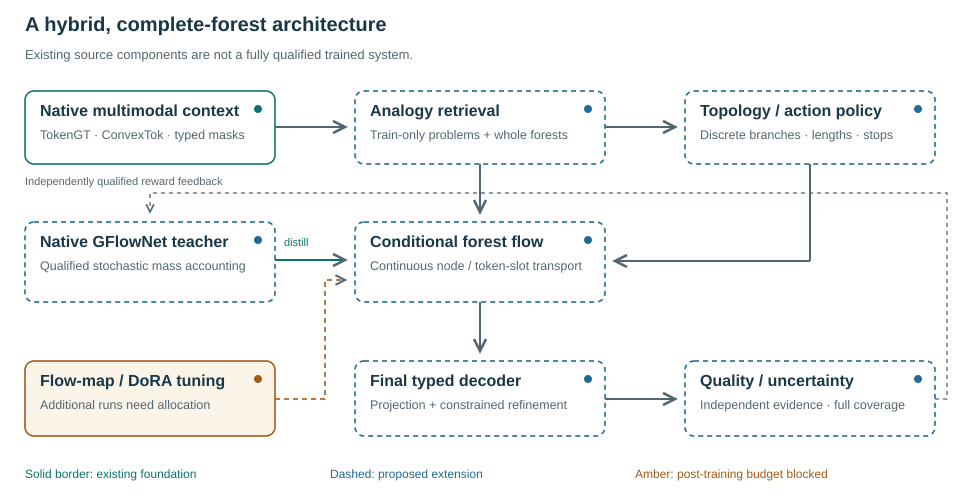
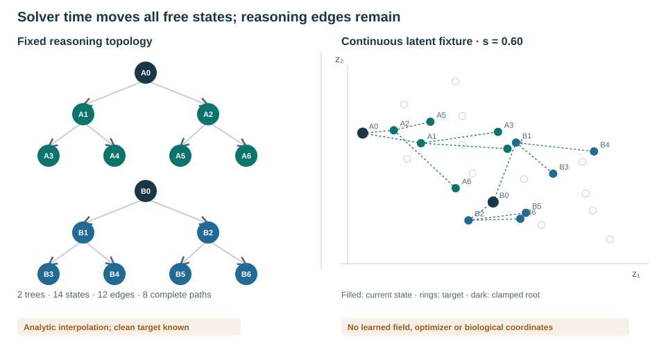
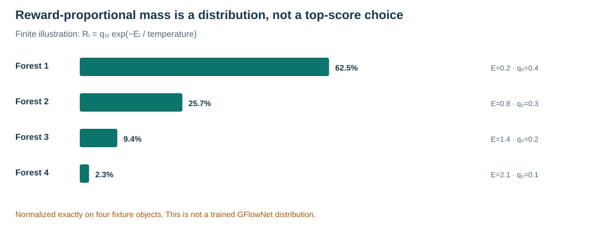
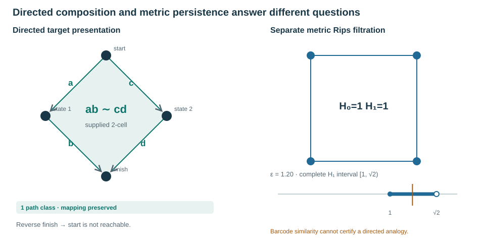
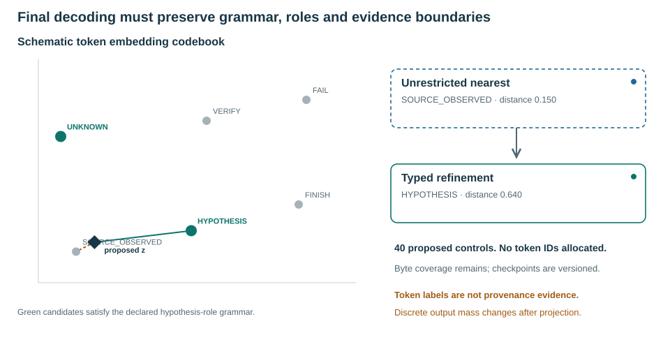
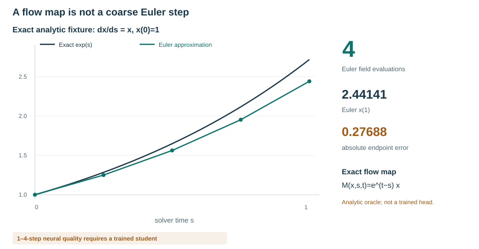
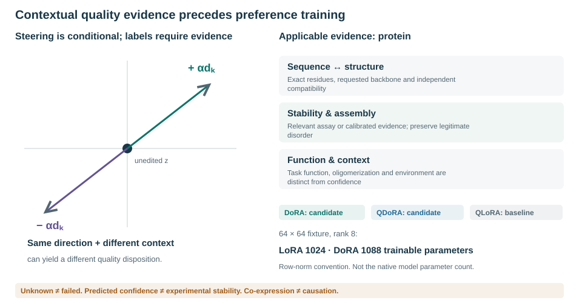
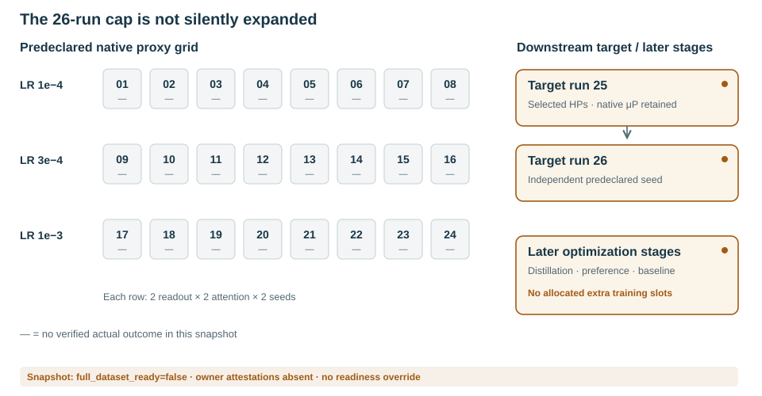
Methods / Numerical topology
Vectorized persistence. Exact evidence retained.
Complete finite persistence landscapes admit an invertible representation. Sampled landscapes and finite persistence images are approximate. Mora-3 retains the native diagrams and separate directed evidence, computes batched landscape/image features, and uses explicit L2 metrics without silently reinterpreting bottleneck thresholds.
Open the interactive persistence laboratory
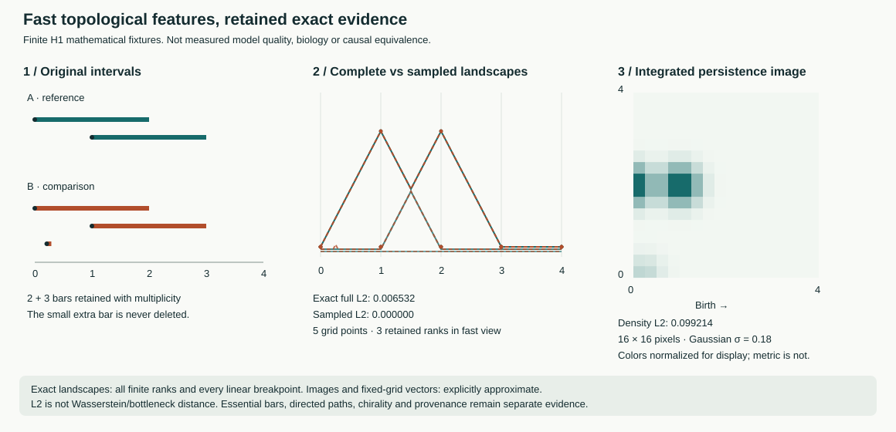
Native memory retrieval preserves condition-only fields, train-only candidates, biological group exclusion and essential/censored status. Directed structural certification remains separate. See Bubenik (2015), Bubenik (2018) and Adams et al. (2017).
Native neural implementation · 13 November 2026
Complete forests now have a native velocity, retrieval, decoder and score path.
The optional trainable modules share the actual TokenGT/geometry representation and are registered in the full source-bound owner, parameter aliases, finite/width axes and strict checkpoint path. They preserve the old disabled configuration. No training or learned biological-quality result is claimed.
The flow field processes all noisy nodes and parent edges jointly, with clamped conditions and excluded hidden targets. Its subtree editor regenerates affected descendants without rewriting unrelated branches. A context-only analogy query searches group-disjoint training memories using learned full-forest keys.
The token decoder learns explicit node/slot projections into a frozen versioned codebook. Exact nearest-token scores use the full embedding dimension, with bounded row-wise vocabulary scoring and backward recomputation. Forty structural controls are appended without renumbering the base payload vocabulary. Missing stop tokens produce repairable refusals, not fabricated complete outputs.
Separate per-node and whole-forest quality criteria retain unknown-label masks. A neural priority cannot override an independent refused or unknown constraint decision. All criterion evidence remains bound to the current candidate, context and evaluator.
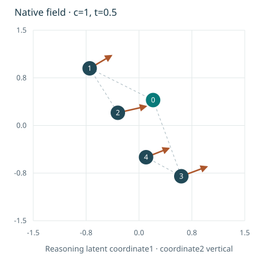
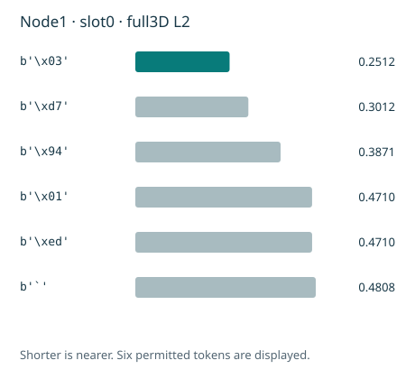
13 November 2026 · Source consolidation and split verification
Compatible native code. A complete registered-view group audit.
The named worktrees are reconciled into one source integration with preserved SCRI, trajectory and four-head forest functionality. The complete registered source view contains80,656,029 selected task records:80,612,917 train,10,076 validation and33,036 test. A full metadata scan found no cross-role declared group-key or task-ID overlap.
This verifies the stated literal grouping and existing roles, not every unknown biological relationship, a new80/10/10 split, full expanded-source rights or trained model quality. No substantive training was performed. The combined focused suite passed506 tests and60 subtests.
Read incorporation details, original-source evidence and remaining requirementsGRH-research × Mora-3 · Native computation references
One source record, a complete reasoning prefix.
The pinned GRH research project now connects to Mora-3 through an exact tensor/dependency bridge into its existing native reasoning interfaces. Whole computation schedules and target-specific ancestor prefixes remain distinct; hidden results and unrelated branches are excluded from predictor inputs.
Three original numerical traces are evaluation-only references, not new Mora training results or biological observations. The separate computed conformer/dynamics corpus retains its source-specific overlap masks and unfinished admission requirements.
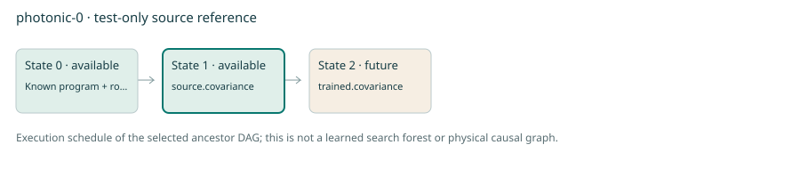
Evidence snapshot
What has been checked so far.
Source preservation, field masking, and component diagnostics establish prerequisites for testing the model. The counts below measure different things and have separate denominators.
Flow proposals and FoT refinement
Generate several forests, refine them, retain multiple outputs.
The implemented inference controller batches whole-forest flow proposals, uses content-bound scores and constraint checks, replaces deficient subtrees without erasing their predecessors, and rechecks decoded outputs. It returns several distinct qualifying outputs or an explicit shortfall. This is not a claim of a trained or fully qualified native flow head.
Explore the interactive candidate and edit lineage
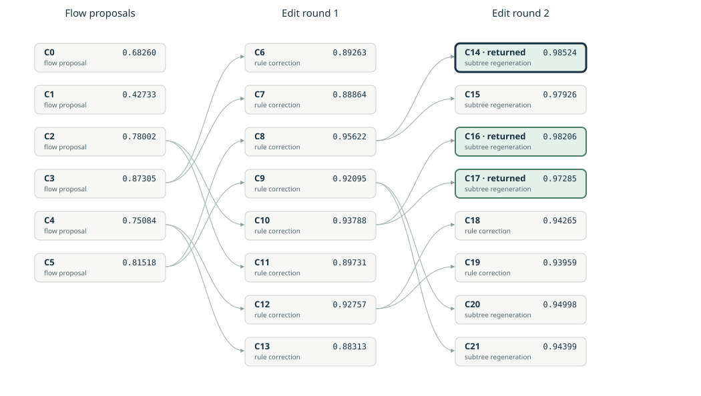
Source basis: Bi et al., Forest-of-Thought, ICML2025, sections3.1–3.3. Explicit latent subtree replacement and multi-output selection extend the paper rather than reproduce an undocumented edit taxonomy.
Limitations
What the model would still need to prove.
Shared representations can make linked prediction and generation possible, but agreement between a generator and predictor can reflect their shared biases. Candidate claims require independent held-out comparisons and, where relevant, experimental confirmation. Split integrity, uncertainty calibration, context support, and missing data are part of the evaluation.
Planned results will distinguish predictive error, candidate validity and diversity, constraint satisfaction, failures, actual exposure, and measured compute. The design offers no evidence of clinical efficacy.
References